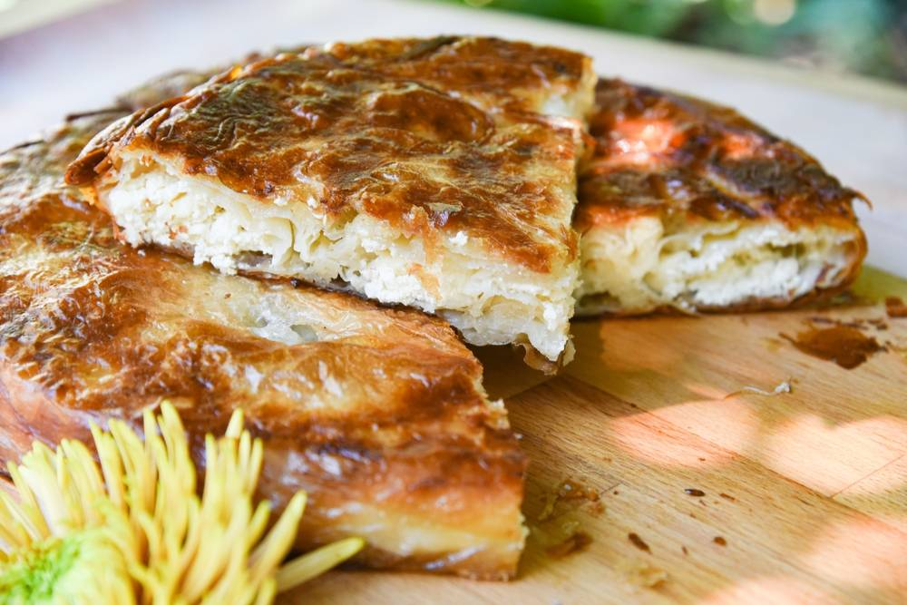

Home
Burek With Cheese

Description
The Burek with Cheese is a widely loved savory pastry and a staple of
Balkan cuisine. It is defined by its distinct texture: a soft, creamy
interior encased in a wonderfully flaky, crisp crust.
At its heart, the pastry consists of paper-thin dough (filo or
hand-stretched vučeno testo) that is either layered or tightly coiled into
a recognizable spiral (the "snail" shape). This dough is generously filled
with a simple but rich mixture of soft white cheese, typically a blend of
salty Feta and a milder cheese like cottage or ricotta, combined with
eggs. The pie is then baked until it achieves a deep golden-brown colour.
Due to its hearty nature, Burek With Cheese is popular as
a substantial breakfast, quick lunch, or comforting snack. The perfect
bite offers a striking contrast: the fragile, delicate layers of the
pastry shattering against the warm, slightly salty, and moist cheese
filling. It is often enjoyed best when still hot, perhaps accompanied by a
glass of plain yogurt or sour milk.
Ingredients
- 500 g Filo Pastry (Thin, ready-made pastry sheets)
-
500 g Cheese (A mix of Feta and cottage/ricotta cheese works best)
- 1 Egg
- Oil (or melted butter)
- A splash of Sparkling Water (or soda water)
- Pinch of salt (optional, depending on the cheese)
Filling Preparation & Assembly
-
Prepare the filling: In a bowl, mix the cheese with the egg. Add a pinch
of salt if your cheese mixture is bland.
-
Prepare the liquid: In a small cup, mix the oil (or melted butter) with
a splash of sparkling water. This will be your coating.
-
Assemble: Lay out one sheet of filo pastry and lightly brush it with the
oil/water mixture.
- Place a second sheet of pastry on top and also brush it lightly.
-
Spread a thin line of the cheese filling along the long edge of the top
sheet.
- Tightly roll the pastry into a long, thin tube (a "sausage").
-
Coil the tube into a spiral shape (a "snail") and place it in a round
baking pan that has been greased with oil.
-
Repeat with the remaining pastry and filling, extending the spiral until
the pan is full.
-
Before baking, pour any remaining oil/water mixture over the entire top
of the burek.
Baking
-
Bake in an oven preheated to 200 °C (390 °F) for about 30 to 40 minutes,
or until the crust is golden brown and crisp.
- Let it cool for 5-10 minutes before slicing and serving.